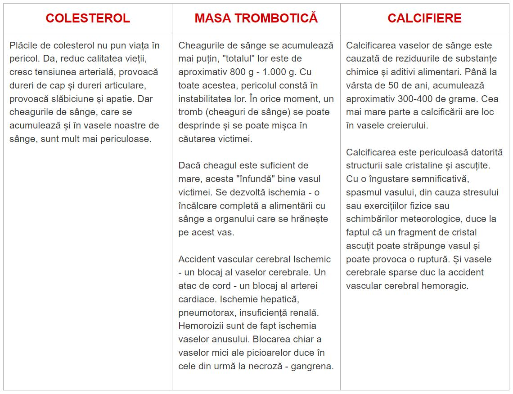
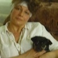

Hipertensiunea arterială, blocarea vaselor de sânge și durerile cardiace
sunt cauza morții premature. Cum să o evitați?
George Stănescu
01.06.2022
Toată lumea știe că presiunea, accidentul vascular cerebral și atacul de cord
sunt consecințele vaselor de sânge înfundate cu colesterol. Cu toate acestea, puțini oameni
își dau seama că acesta este doar vârful aisbergului. Vasele "înfundate" sunt
cauza a 9 din 10 boli cronice, aproape fatale.
Hipertensiunea arterială este o patologie care afectează fiecare al treilea adult din
țară, în timp ce majoritatea populației nu știe despre problemă și, prin urmare, nu ia nicio
măsură. Și mulți dintre cei care știu despre problema lor fac greșeli în terapie: iau remedii
neregulat sau nu le iau deloc, în doze prea mici etc. Din păcate, mulți ani de control
necorespunzător al tensiunii arteriale pot afecta negativ funcționarea sistemului cardiovascular și a
rinichilor, provocând numeroase complicații care pun în pericol sănătatea și viața.
Ce ar trebui să știe persoanele cu hipertensiune arterială?
De ce vasele de sânge reprezintă 85% din sănătatea noastră?
Ce altceva poate înfunda vasele de sânge, altele decât
colesterolul?
4 evidente și 7 alte semne ascunse de stare slabă a vaselor de sânge
Cum să curățați în siguranță vasele acasă?
La aceste întrebări a răspuns șeful Clinicii de circulație pulmonară,
tromboembolism și Cardiologie a Centrului European de sănătate din capitală. În perioada
2004-2007, a fost directorul Societății de Cardiologie. Vicepreședinte al Societății Europene de
Cardiologie, expert - Petru Ungureanu.
George Stănescu: Dle Ungureanu, spuneți întotdeauna
că vasele de sânge reprezintă 85% din sănătatea organismului. De ce este așa?
Care este cel mai mare organ din organismului uman? Puțini oameni cunosc. Studenții mei
de asemenea fac adesea greșeli. Cel mai adesea ei spun că creierul și ficatul. Cel mai inteligenți vor
spune că este pielea. De fapt, cel mai mare organ - este sistemul nostru circulator. Vasele de
sânge nu sunt doar tuburi prin care curge sângele. Acesta este un organ complex și unic, a
cărui distrugere se termină inevitabil în suferință.
Circulație slabă a sângelui în vasele picioarelor – varice, umflături constante și greutate veșnică în picioare, senzație de arsură
rece sau insuportabilă. Călcâie crăpate. Circulația slabă a sângelui înseamnă o lipsă de
protecție împotriva bacteriilor și, în consecință, împotriva ciupercilor. Unghiile devin
groase și lungi.
Vasele înfundate care alimentează ficatul duc la la
hepatită. Gust amar în gură. Gust amar după consumul alimentelor
grase.
Vasele de sânge slăbite și înfundate în articulații duce la
uscarea țesutului cartilaginos. Articulațiile scârțâie și dor, se
dezvoltă osteochondroza, apar hernii.
Cu slăbirea vaselor anusului apar hemoroizii de culoare
violet.
Cu vasele de sânge sărace ale ochilor se înrăutățește
vederea, ea devine încețoșată, apare efectul musculițelor zburătoare. Se dezvoltă
cataracta. Roșeața ochilor, pe care o asociem adesea cu oboseala, este de fapt o micro hemoragie –
ruptura capilarelor mici ale ochiului. Și, desigur, regina patologiilor vasculare este Maiestatea Sa
hipertensiunea. Și, la rândul său, hipertensiunea arterială este mama accidentului vascular
cerebral și sora atacului de cord.
La expresia "Fericirea depinde de sănătate" puteți adăuga "dar
sănătatea depinde de vasele curate"
Vasele "înfundate" duc la înfometarea tuturor organelor.
De exemplu, excesul de greutate este strâns legat de vasele de
sânge. Alimentele umplute cu colesterol fac ca organele să moară de foame, iar vasele de sânge
nu le pot furniza suficienți nutrienți. Astfel, creierul trimite semnale că este nevoie de alimente. Și
persoana mănâncă. Cu toate acestea, organele noastre nu primesc cantitatea potrivită de nutrienți
din cauza blocării vaselor de sânge. Și creierul ne trimite din nou un semnal despre mâncare.
Acest proces se repetă în mod constant.
Prin urmare, există o nevoie constantă de alimentare, o dorință pentru alimente
dulci și grase, deoarece organismul are nevoie de calorii.
Când colegii spun oamenilor:"Aveți hipertensiune arterială din cauza
excesului de greutate", ei înțeleg greșit cauza problemei. Hipertensiunea nu este cauzată de
excesul de greutate. Ci excesul de greutate este cauzat de hipertensiune arterială.
Prin urmare, nu voi înceta niciodată să repet: dacă doriți să trăiți o viață
deplină, curățați și restaurați vasele de sânge. Vasele de sânge curate sunt cheia pentru a
scăpa de 90% din bolile cronice, dintre care unele sunt considerate
"incurabile".
"Dacă lumenul normal al vasului este la fel de gros ca un deget, atunci
5 kg de plăci de colesterol reduc lumenul la aproximativ 4 meciuri"
George Stănescu:Toată lumea știe că colesterolul
este rău. El este cel care ne înfundă vasele de sânge, îngustă fluxul sanguin și
agravează circulația sângelui. Dar este el singurul vinovat?
Exact. Plăcile de colesterol, cunoscute și sub denumirea de "plăci
aterosclerotice", sunt responsabile pentru aproximativ 60-70% din blocajul
vascular.
Până la vârsta de 50 de ani, până la 5 kg de plăci de colesterol se
acumulează în vasele organismului. Acumulările de colesterol îngustează fluxul în vase de
4-5 ori.
5 kg din greutatea totală a acumulărilor în vase la vârsta de 50 de ani
COLESTEROL
MASA TROMBOTICĂ
CALCIFIERE
Plăcile de colesterol nu pun viața în pericol. Da, reduc calitatea
vieții, cresc tensiunea arterială, provoacă dureri de cap și dureri articulare, provoacă
slăbiciune și apatie. Dar cheagurile de sânge, care se acumulează și în vasele noastre
de sânge, sunt mult mai periculoase.
Cheagurile de sânge se acumulează mai puțin, "totalul" lor
este de aproximativ 800 g - 1.000 g. Cu toate acestea, pericolul constă în instabilitatea
lor. În orice moment, un tromb (cheaguri de sânge) se poate desprinde și se poate
mișca în căutarea victimei. Dacă cheagul este suficient de mare, acesta
"înfundă" bine vasul victimei. Se dezvoltă ischemia - o încălcare completă a
alimentării cu sânge a organului care se hrănește pe acest vas. Accident vascular
cerebral Ischemic - un blocaj al vaselor cerebrale. Un atac de cord - un blocaj al arterei
cardiace. Ischemie hepatică, pneumotorax, insuficiență renală. Hemoroizii sunt de fapt ischemia
vaselor anusului. Blocarea chiar a vaselor mici ale picioarelor duce în cele din urmă la
necroză - gangrena.
Calcificarea vaselor de sânge este cauzată de reziduurile de substanțe
chimice și aditivi alimentari. Până la vârsta de 50 de ani, acumulează aproximativ
300-400 de grame. Cea mai mare parte a calcificării are loc în vasele
creierului. Calcificarea este periculoasă datorită structurii sale cristaline și
ascuțite. Cu o îngustare semnificativă, spasmul vasului, din cauza stresului sau
exercițiilor fizice sau schimbărilor meteorologice, duce la faptul că un fragment de cristal
ascuțit poate străpunge vasul și poate provoca o ruptură. Și vasele cerebrale sparse duc la
accident vascular cerebral hemoragic.

4 semne evidente și 7 ascunse care indică problemele vaselor de
sânge
Dacă aveți peste 45 de ani și nu ați luat niciodată nutraceutice pentru curățarea
vaselor de sânge, vă garantez că aveți probleme.
Colesterolul - vasele de sânge înfundate, cheagurile de sânge,
calcificarea sunt procese naturale de îmbătrânire. Este evident că în prezent alimentele,
produsele farmaceutice, fumatul și alcoolul accelerează procesul de "înfundare" de 5-8
ori. Dar suntem cu toții ființe umane și este inutil să ascundem că lumea în care trăim este făcută
în acest fel.
Dacă ați fost diagnosticat cu hipertensiune arterială, nici măcar nu trebuie să mă
ascultați. Hipertensiunea arterială este regina vaselor de sânge problematice.
Suferiți de salturi de presiune? Este constant ridicată și trebuie să luați pastile?
Astfel, în cel mai bun caz, vasul a păstrat 30% din lumen. Restul este acoperit dens cu plăci de
colesterol, trombi și calcifiate.
Prin urmare, cel mai mic stres, schimbări meteorologice, furtuni magnetice afectează
imediat bunăstarea. Presiunea crește, în cap se aude un zumzet, articulațiile
ronțăie.
4 probleme, cauzate de blocarea vasculară:
1. Hipertensiune arterială
Presiune instabilă sau ridicată care trebuie
redusă cu ajutorul mijloacelor auxiliare. Acesta este principalul și cel mai important
indicator. Ați fost diagnosticat cu hipertensiune arterială? Deci, vasele de sânge vă spun
"avem nevoie de curățare!”
2. Varice
Vene foarte proeminente pe picioare, greutate și durere,
umflături. Colesterolul și cheagurile de sânge "înfundă" venele.
Asteriscurile vasculare apar treptat, care în cele din urmă se transformă în
telangiectasie. Și telangiectasia, la rândul său, se transformă în vene varicoase.
3. Hemoroizi
Când vasele anusului sunt blocate, hemoroizii se
umflă. Dacă vasele de sânge prin care trece sângele se înfundă, apare o fisură
anală.
4. Osteocondroză
Aceasta este o lipsă de circulație a sângelui
în cartilaj. Cartilajul se usucă și începe să se uzeze, fără a avea timp să se
recupereze. Nu se recuperează și se usucă. Pierde capacitatea de a sprijini. Sărurile nu se
excretează și încep să se acumuleze necontrolat, formând o "cocoașă a
văduvei".
7 semne de avertizare:
1. Umflare
Vasele înfundate nu au timp să elimine fluidele.
Acestea perturbă echilibrul apă-electrolitic. Până seara, picioarele se umflă și există
urme de șosete înguste pe glezne. Față umflată și pungi sub ochi. Este imposibil să
scoateți inelele de pe degete. Un stomac umflat indică umflarea organelor interne
2. Sunet în urechi
De la un sunet abia audibil la un sunet
puternic sau zumzet care face dificilă concentrarea. Acestea sunt consecințele presiunii
crescute a vaselor cerebrale care apasă pe timpan
3. Amețeli
Sentimentul de intoxicare și atacurile bruște de amețeli
indică faptul că vasele de sânge sunt "înfometate". De asemenea, adesea
suferă și auzul
4. Insomnie
Te simți somnoros și, mergând la culcare după miezul
nopții, nu poți adormi? Motivul - lipsa alimentării cu sânge a glandei pituitare. Ea nu mai
produce melatonină, hormonul somnului.
5. Oboseală
Slăbiciune. Nu vrei să faci nimic. Vrei doar să te
întinzi și să mănânci. Acest sentiment apare din cauza faptului că organismul intră
în regimul de economisire a energiei. Organele nu primesc suficienți nutrienți prin vasele
înfundate, iar organismul încearcă să reducă nivelul de activitate pentru a nu
muri.
6. "Probleme de vedere"
Senzația de mușchi zburători, vedere
încețoșată. Acestea sunt semne de insuficiență vasculară a ochilor
7. Dureri articulare
Schimbările meteorologice provoacă durere și
ronțăit în articulații. Trezindu-se dimineața, nu te simți vioi și odihnit, ci amorțit și
aproape paralizat. Este nevoie de ceva timp pentru a relaxa articulațiile rigide după somn.
Lichidul sinovial își pierde proprietățile, lipește articulațiile ca aluatul
Cel mai adesea, oamenii au mai multe semne combinate în același timp. Aveți cel puțin unul
dintre aceste semne? Navele sună cu disperare alarma, au nevoie de curățare și nutriție.
Epuizați, încearcă să lupte separat cu fiecare dintre probleme. Patile pentru hipertensiune
arterială, unguente pentru vene varicoase, lumânări pentru hemoroizi, geluri pentru
osteochondroză. Și, desigur, o mulțime de analgezice.
Ei cheltuiesc bani pentru a alimenta afacerea farmaceutică. Deoarece cauza tuturor patologiilor este
aceeași - tulburări circulatorii. Și trebuie să începeți cu o curățare generală a vaselor.
"Majoritatea mijloacelor farmaceutice nu ajută și nu restaurează, ci
slăbesc și dăunează"
George Stănescu:Domnule Ungureanu, care este cel
mai eficient mod de a curăța vasele de sânge de colesterol, trombi și calcifiere?
Pentru curățarea în siguranță a vaselor, vă pot recomanda un remediu
simplu cu o reputație impecabilă - . Prelungește viața cu
12-17 ani, umplând-o
cu energie și un sentiment de relaxare, mai degrabă decât suferință și pierderea vitalității.
Acest lucru este sigur ca ceaiul din plante. Și în ceea ce
privește eficacitatea, acest instrument ocupă locul doi după curățarea chirurgicală a vaselor de
sânge - stenting. Cu toate acestea, spre deosebire de chirurgie, nu are complicații sau efecte
secundare. Ciclul de admisie curăță toate vasele de sânge din organism. De la artere groase mari la
capilare mai mici și mai subțiri.
- un produs 100% natural pe bază de extracte de plante
care trezește molecule
vii la contactul cu apa. Aceste mici "produse de curățare" elimină mucusul colesterolului din
vasele de sânge, trombii care se lipesc de pereți, calcificări - resturi de produse farmaceutice.
Tot ceea ce interferează cu fluxul sanguin normal. Nu mai târziu de 1,5 - 2 luni de utilizare
regulată, distruge toate amestecurile dăunătoare acumulate de-a lungul
anilor și vă otrăvește
viața.
Durerea de cap dispare și, odată cu ea, zgomotul în urechi. Creierul, care
primește o cantitate suficientă de nutrienți prin vase curate, începe să funcționeze la viteza unui
supercomputer. Gândurile devin clare și precise.
Auzul se îmbunătățește, puteți auzi sunete plăcute pe care nu
le-ați observat înainte. Îmbunătățirea auzului este semnificativă atât de mult
încât puteți chiar să faceți o conversație liniștită în camera
alăturată.
Aromele devin mai intense. Congestia nazală, nasul cronic și alergiile
dispar. Bronhiile se restaurează. Respirația devine mai liberă și netedă. Aerul proaspăt umple
plămânii, se răspândește prin corp în valuri plăcute, provocând o senzație de
euforie ușoară.
Gustul devine intens și divers. Mâncarea obișnuită aduce o
plăcere extraordinară. Mâncați mai puțin și primiți mai mult. Dorința constantă pentru dulce și
alimente grase dispare.
Articulațiile spun "mulțumesc", nu vă mai dor. Ronțăitul din
articulații dispare complet, mișcările devin netede, datorită hidratării restaurate a articulațiilor.
Este ca și cum ai schimba uleiul de motor, înlocuind lichidul negru murdar care conține pilituri
metalice cu ulei curat proaspăt pentru o aderență perfectă.
George Stănescu:E impresionant. Dacă să vorbim
cinstit, aceasta este prima dată când am auzit de . Deși, în
general, am auzit de
nutraceutice. În Japonia și Israel, nutraceuticele sunt recunoscute oficial ca metode preferate
de terapie. Iar în țara noastră încă nu au încredere în aceste produse. De ce?
Permiteți-mi să vă spun o poveste moralizatoare despre neîncredere. În 1928,
a fost descoperit primul antibiotic - penicilina. El a eliminat cu ușurință dizenteria
și tifosul, din cauza căror oamenii mureau în mod inevitabil.
Cu toate acestea, majoritatea oamenilor nu credeau că ar putea ajuta, deoarece au fost
de 1000 de ori dezamăgiți în încercările lor de a se recupera. Cei care au fost dezamăgiți de
1000 de ori și nu s-au temut să încerce 1001, și-au recăpătat puterea. Iar cei care au renunțat,
ridicând din umeri și spunând:"Un alt produs miraculos care nu ajută", au decedat,
deși mântuirea era aproape.
La fel cum penicilina a învins cândva bolile din acea vreme: dizenteria,
febra tifoidă și ciuma pneumonică. În timp, va elimina
problemele
vasculare. Primii pași au fost deja făcuți - Germania, Japonia, Canada, Coreea, Elveția și
Israel au adoptat legi privind curățarea vaselor cu nutraceutice în loc de terapia medicamentoasă.
"Îndoielile noastre ne înființează, ne fac să pierdem o
mulțime de oportunități din cauza fricii de a încerca.”
La noi, este înregistrat oficial doar într-un
singur loc -
într-o clinică privată. În cazul în care oferă asistență VIP-urilor din politică și show
business și alte elite. Acolo au fost adoptate protocoalele de terapie israeliene, iar reglementările
noastre nu le privesc. În acest fel, oamenii obțin rezultate, în loc de un proces
nesfârșit.
Restul cetățenilor noștri li se oferă să cumpere mijloace sintetice, care sunt produse
de mari companii farmaceutice deținute de aceiași elită.
2 luni de la administrarea - este aceeași, ce a fi
renăscut.
George Stănescu:De asemenea, cred că
îndoielile sunt cel mai mare dușman al nostru, așa că nu mă tem să încerc ceva nou.
Imaginați-vă că am luat o cutie de și am deschis-o. Ce se
întâmplă în
continuare? Cum funcționează acest remediu?
Cu lichid și oxigen, extractele utile dobândesc efectul peroxidului de hidrogen,
sunt saturate cu oxigen.
Moleculele de - sunt bombe mici de oxigen. Acestea
explodează depozitele de
colesterol în vasele de sânge și asigură fluxul sanguin liber.
a fost numit "curățător de vase". Acest lucru
reflectă foarte bine
esența sa.
De aceea, este atât de eficient: luați extracte vii
care sunt active.
Între timp, produsele de la farmacie vă oferă doar formule "scheletice" pasive și
sterilizate.
Compoziția asigură absorbția instantanee a particulelor
vii. Extractele
îmbogățite cu oxigen sunt ușor absorbite în pereții esofagului. Prin urmare, nu
provoacă arsuri la stomac, amărăciune în gură, respirație urâtă, nu irită intestinele și
protejează stomacul. Chiar și persoanele cu ulcere pot lua în siguranță
.
" este o comoară de extracte rare care
curăță și întăresc
armonios vasele de sânge"
ELIBEREAZĂ "TUNELELE"
Extract de frunze de măslin – normalizează nivelul de colesterol din sânge, previne dezvoltarea aterosclerozei. Ajută la prevenirea formării plăcii arteriale și la reducerea riscului de atac de cord și accident vascular cerebral. Moleculele substanței, ca o
daltă, bat moleculele de colesterol atașate la pereții vaselor de sânge. Asigurând fluxului
sanguin liber. Organele încep în sfârșit să primească nutrienți. Cartilajul revine la
viață, saturat de umiditate și oxigen, activează mecanismul de auto-vindecare. Flexibilitatea este
restabilită. Dispare ronțăitul gâtului, spatelui și articulațiilor. Genunchii și degetele nu
reacționează la schimbările meteorologice.
Umflarea dispare. Picioarele nu se umflă nici după o zi întreagă pe picioare.
Alimentarea cu sânge a pielii este restabilită - asteriscurile și telangiectaziile dispar. Varicele
scad treptat, hemoroizii se restabilesc.
ÎL TRANSFORMĂ ÎN ENERGIE
Cromul – ajută la menținerea nivelului de zahăr din sânge în limite normale, precum și la asigurarea unei compoziții sănătoase a țesuturilor corpului. Ele captează „fragmente” de
molecule de colesterol și, combinându-se cu acestea, le transformă în lipoproteine utile de
înaltă densitate implicate în metabolismul lipidic.
ia două păsări cu o singură piatră - elimină
colesterolul, care înfundă
vasele de sânge și stimulează arderea corectă a grăsimilor. Datorită acestui fapt, simțiți un val
de forță, simțiți dorința de a vă mișca, ochii prind viață, simțiți dorința de a "rostogoli
munții".
REDUCE SPASMELE
Extract de Gymnema Sylvester – reduce tensiunea arterială, ameliorează iritabilitatea și oboseala, protejează împotriva aritmiilor. Acesta este un fel de
"valerian" pentru vase. Calmează și relaxează vasele de sânge blocate din cauza
încălcării fluxului sanguin. Presiunea revine treptat și în siguranță la normal. Durerea de
cap dispare, zgomotul din cap dispare, plămânii și bronhiile funcționează normal.
AJUTĂ INIMII
Vitamina C - îmbunătățește rezistența vaselor de sânge, normalizează metabolismul colesterolului, are un efect pozitiv asupra sistemului endocrin și nervos.
Inima suspină cu ușurare, ca și cum o pungă de ciment ar fi fost scoasă din ea. Ritmul
cardiac încetinește și devine regulat. Aritmia și tahicardia nu mai creează probleme. Tulburările
acute în piept cauzate de o embolie cardiacă nu se repetă și sunt uitate pentru totdeauna. Riscul
unui atac de cord este redus la zero.
EFECT DE FLUTURE
este ca flutterul aripilor de fluture, care provoacă o
reacție în lanț de
schimbări extraordinare. Începând cu curățarea vaselor de sânge de impuritățile acumulate
de-a lungul deceniilor, pas cu pas începe o reacție în lanț care
curăță întregul
organism.
TREZIRE UȘOARĂ
Vă treziți dimineața și vă ridicați ușor din pat - nu este nevoie să depuneți eforturi
pentru a vă ridica, a întinde picioarele și a dezmorți spatele și gâtul.
Dimineața, organismul este umplut cu energie și putere, deoarece vasele sunt complet
curățate, iar în timpul nopții toate organele au primit o cantitate suficientă de nutrienți și
odihnă. Nici o parte a corpului nu a fost lipsită de sânge și are suficientă putere pentru o nouă
zi.
MIC DEJUN DELICIOS
Pentru micul dejun, mâncați un sandwich cu un strat gros de unt și slănină
crocantă, iar ficatul și stomacul îl digeră. Nu mai aveți amărăciune în gură sau o durere
înjunghiată în stomac. a curățat vasele care transportă
substanțe nutritive în
stomac, așa că acum va digera chiar și unghii.
PLIN DE ENERGIE
Când părăsiți casa, nu mai trebuie să vă faceți griji cu privire la picioare:
mersul pe jos nu este oboseală, puteți merge toată ziua, picioarele nu obosesc și nu se umflă.
Sandalele, cizmele, șosetele nu mai lasă urme.
PACE ABSOLUTĂ
Sunteți absolut calm și relaxat. Nu mai aveți acea durere constantă care vă distrugea
conștiința, împiedicându-vă să vă concentrați asupra altceva. Când nimic nu doare,
lucrurile familiare, sunetele și mirosurile își reiau splendoarea.
GÂNDURI CLARE
Chiar și după o zi grea de muncă, vă întoarceți acasă cu o minte clară și
concentrată. Creierul funcționează ca un ceas elvețian, nu vă simțiți deloc obosit.
SOMN PROFUND
Și acum, culcat în pat, adormiți repede și plăcut. Au dispărut zilele în care
te rotești în pat jumătate de noapte, întorcând perna din când în când,
dar somnul nicicum nu venea. Acum totul este simplu: decideți când să adormiți, iar organismul vă
ascultă comenzile.
"Acesta este un mod uimitor și natural de combatere a diferitelor
patologii, care ajută la îmbunătățirea funcționării zilnice a organismului. Și trebuie să găsiți o
modalitate de a-l adăuga la viața ta."
Deficit și program preferențial
George Stănescu:Din câte știm, a
dispărut din majoritatea farmaciilor private? De ce?
Din păcate, da. nu mai este disponibil în farmacii private de la
începutul acestui
an.
Motivul conflictului a fost lăcomia lanțului de farmacii private, care a cerut 480 de euro de la
producătorul de pentru fiecare pachet vândut! După ce a stabilit
o marjă deja ridicată
la prețul producătorului (prețul în unele farmacii private din
țară a ajuns la
câteva mii de euro), farmaciștii privați au dorit să impună costuri suplimentare
producătorului.
Reprezentanții farmaciilor private justifică acest lucru susținând că o astfel de taxă
suplimentară le permite să supraviețuiască. La urma urmei, este un
produs care trebuie
cumpărat la fiecare 7-10 ani. În plus, după curățarea vaselor de sânge cu aceste capsule,
o persoană nu mai are nevoie de remedii de la farmacii private pe care le-a folosit înainte!
Oamenii opresc scăderea tensiunii arteriale și nu cumpără analgezice. Consumul mijloacelor pentru
astm și diabet este redus semnificativ. Și aceasta implică pierderi financiare pentru farmacii
private. De aceea este necesar un preț ridicat pentru .
În cele din urmă, producătorul a oprit contactele cu toate
farmaciile private și a
început să-l distribuie exclusiv pe Internet. În principiu, acest lucru este corect.
Judecați singuri: nu este nevoie să se plătească pentru închirierea punctelor de vânzare
cu amănuntul, nu mai este nevoie să plătească mită în farmacii private. Astfel, face
parte acum dintr-o oferta specială.
Institutul nostru, împreună cu Centrul de cercetare a chirurgiei cardiovasculare și producătorul
, au lansat un program de reduceri în cadrul proiectului
telemedicină (Internet
Medicine).
Oricine poate comanda la un preț special.
George Stănescu:Ce trebuie să fac pentru a lua
parte la program?
Pentru a obține , trebuie să îndepliniți următoarele
condiții:
Condițiile pentru obținerea
Numai pentru uz personal.
Trimiteți o solicitare prin formularul oficial al
programului.
Acest lucru se face pentru a combate speculatorii care încearcă să
cumpere în cantități mari și să-l revândă.
Formularul oficial de cerere este o garanția calității și a protecției
împotriva speculatorilor.
George Stănescu:Cât va dura programul
preferențial?
Până de 06.06.2022
inclusiv sau până la sfârșitul complet al lotului . Și
toate acestea, în
ciuda lipsei de publicitate la radio și televiziune. Oamenii împărtășesc informații, le
recomandă rudelor și prietenilor. De asemenea, a fost o surpriză pentru noi că informațiile despre
produs au început să se răspândească atât de repede.
Prin urmare, vă recomandăm să comandați cât mai
curând posibil. Anul
acesta nu va mai exista un astfel de program.
Pentru 06.06.2022, au rămas:
19 buc.
DISCUȚII ȘI ÎNTREBĂRI:
Elena
Luna trecută am comandat acest produs pentru mine. S-a
întâmplat că tensiunea arterială să ridicat prea mult, iar ritmul cardiac a
devenit puțin neregulat. După administrarea acestui remediu timp de 3-4 săptămâni,
tensiunea arterială a revenit la normal. Acum mă simt mult mai bine. Mulțumesc!
Valentina Lazăr
Am primit un pachet cu , funcționează
așa cum spun! Am avut
dureri de cap aproape în fiecare seară, eram foarte bolnav, nici analgezicele nu m-au
ajutat. Abia după un timp mi-am dat seama că am o durere de cap din cauza presiunii. Dar nu
asta e ideea. Un prieten mi-a recomandat , l-am comandat la
timp în cadrul unui
program preferențial și am fost foarte mulțumit. Peste 2 luni, am devenit o persoană
diferită! Mi-am dat seama că până nu mi-am curățat vasele, chiar nu am trăit! Capul meu
nu mă doare, varicele au dispărut și, în primul rând, am slăbit 24 KG! De la 101
kg la 77 kg! Asta înseamnă normalizarea circulației sângelui! Recomand cu tărie
tuturor ca măsură preventivă!
Carina Bratosin
Oameni: dacă regiunea dvs. nu participă la program, poate aveți rude
sau cunoscuți în această regiune? Îi puteți ruga să plaseze o comandă. Cu excepția
cazului în care, desigur, decid să păstreze pentru ei
înșiși :)), în
condițiile programului, puteți comanda un singur pachet de persoană.
Cătălina Stanciu
Am trecut prin terapie timp de 3 luni și am plătit aproape 1000 de
euro. Dar asta a fost anul trecut, când a fost
vândut la farmacii private.
Și vreau să spun că nu regret! Deși a fost scump, numai în ultimul an am reușit deja să
economisesc aproape aceeași sumă, pentru că nu mai trebuia să cumpăr mijloace din farmacii
private. Și viața a devenit mult mai ușoară, merită toți banii! La 51 de ani, mă simțeam ca
un bătrân slab. Am încercat să nu mă îndepărtez prea mult de tonometru și să
țin mereu pastile de presiune în apropiere, nici măcar nu visam să trăiesc până la
pensionare, capul meu continua să se despartă, de multe ori mi s-a întâmplat să mă
gândesc: ar fi mai bine să mor... Vorbind de presiune, am uitat despre ea după 2 luni,
mă simt ca un bărbat tânăr și sănătos (dacă știți ce vreau să spun)! Deci, chiar dacă
nu există un program preferențial în regiunea dvs., comandați fără reduceri, cu orice
preț - nu veți regreta! Mi se pare că va fi în
curând interzis în
țara noastră, deoarece otrăvește viața multor companii și le privează de profituri.
Andreea Voinea
este cel mai bun remediu. Într-o
zi m-am dus la un
specialist care mi-a sfătuit să încerc acest nou instrument - (tânărul
specialist probabil încă credea că fondurile ar trebui să ajute oamenii și să nu ajute
la câștigarea banilor!). În cazul meu, a lucrat după
prima doză -
presiunea a scăzut imediat, dar am continuat cursul așa cum a recomandat specialistul. Peste
4 săptămâni, am uitat ceeste hipertensiune arterială. Varicele care m-au chinuit timp
de 10 ani au dispărut! În plus, am avut o problemă a unei femei, a dispărut și ea. Mă
simt minunat, ca și cum aș fi tânără!

Valentina Matasaru
Mulțumesc! Am reușit să comand un pachet. Voi încerca.
Cristi Cătălin
E cineva în Ploiești, știe cineva?
Ovidiu Tabacu(moderator)
Nu, în Ploiești, programul preferențial este planificat mai
târziu, dacă nu se schimbă nimic, 16.800 de pachete de
vor fi trimise în
orașe și provincii.
Igor Toma
Ce înseamnă 16.800 de pachete pentru o regiune? Este o picătură
în ocean...
Cătălin Ioniță
Ce fel de oameni sunteți voi!!! Ca și cum cineva îți datorează
ceva! Când mi-am dat seama că am nevoie de , nu am
așteptat! Am împrumutat
bani și l-am cumpărat! Iar ei sunt în așteptare pentru reduceri! Ce rușine! Mi-ar fi
rușine să scriu așa ceva!
Ana Buţi
Nu judeca, și nu vei fi judecat! Nu știi în ce situații sunt
alții! Poate cineva este invalid, de unde poate lua bani?
Emanuela Conte
Degetele mamei mele au început să amorțească, un specialist de
încredere i-a sfătuit să curățe vasele de sânge. El i-a prescris
"statine", dar am citit că pot provoca cancer intestinal și am decis să nu risc.
Apoi am descoperit accidental . Am cumpărat produsul și am
plătit 1250 pentru curs.
Dar rezultatele nu au durat mult, după câteva zile mama mea a observat o
îmbunătățire semnificativă a tenului, părului, unghiilor și stării generale a
organismului, iar în a doua săptămână degetele ei au încetat de a amorți.
După 1,5 luni, amorțirea a dispărut complet, iar presiunea a revenit la normal. Se simte
minunat, mama mea și-a recâștigat forța, memoria ei s-a îmbunătățit, iar
articulațiile ei au încetat să o mai doară chiar și pe vreme rea. În general,
produsul este excelent, îl recomand tuturor!
Martina Radu
Vă mulțumim pentru acest comentariu! Nu aș spune că sunt
încântată să vizitez clinicile, mai ales că specialiștii prescriu de obicei
mijloace scumpe sau "scandaloase" (îmi amintesc că nu am găsit picături de
ochi "extraordinare" în nicio farmacie privată din orașul nostru. Șoc).
Specialiștii nu "văd" întotdeauna problemele organismului nostru din
exterior. Mâinile mele amorțeau dimineața de un an, dar având în vedere
aceste recenzii, voi încerca . Deși nu cred că va
influența asupra amorțirii,
dar curățarea vaselor de sânge nu va face rău! Este un produs natural. Mulțumesc!
Camelia Chirilă
Mulțumesc pentru articol! M-a ajutat. Recent am avut colesterol
ridicat, iar un specialist mi-a prescris statine. Când iau o zi liberă de la statine,
încerc să iau , iar compoziția sa naturală îmi dă mai
multă încredere.
Sonia Chiriţă
Am auzit despre această metodă de curățare a vaselor de sânge,
dar nu am încercat-o încă. Cred că acum este momentul să încercăm : -)
Vera Lupu
Am avut o șansă și încă nu regret. Dacă există probleme cu
vasele de sânge, o recomand. Nu au existat efecte secundare, sunt mulțumit de
rezultate
Sabina Chirilă
Am un nivel ridicat de colesterol, mi s-a prescris un remediu
farmacologic. Nu am putut să o iau nici măcar o săptămână, ganglionii limfatici s-au
umflat, mai ales pe gât că nu am putut întoarce capul. În plus, vederea a
început să se deterioreze. După 4 zile de admitere, în fața ochilor mi-a apărut un
fel de "ceață". Specialistul a spus că este posibil după statine, este un efect
secundar. Am schimbat remediul, dar încă mi-a fost frică să-l iau. Acum mă gândesc
să încerc , poate compoziția naturală să provoace efecte
secundare? Mai am timp?
Florin Barbu
- primul remediu pentru colesterol!
După ce am luat, nu am
avut efecte secundare, într-adevăr nu au efecte secundare, deoarece ingredientele sunt
complet naturale.
Paul Ioniță
Cel mai bun remediu pentru colesterol este dieta!
Lidia Şonda
Dieta va ajuta la prevenirea formării de depozite noi, dar nu le va
afecta pe cele vechi. Crede-mă, am fost pe aceste diete de multe ori.
Chiara Negri
Colesterolul total a fost de 6,8, ceea ce este foarte mare pentru
mine. Amețeli constante, salturi de presiune și stare de rău. Și după 2 luni, rezultatul a
devenit de 3,4. Dar cel mai important lucru este bunăstarea mea! Acum pot face fără teste.
Mi-am dat seama de diferență, ce este sângele fără "grăsime", când capul
a început să funcționeze clar)) oamenii mă întâlnesc și spun că pronunția de
asemenea s-a îmbunătățit! Totul s-a schimbat
Vicenția Stan
Vă mulțumim pentru informații! Vreau să încerc, presiunea mă
împiedică să trăiesc...
Matilda Căruță
Confirm fiecare cuvânt, este un
miracol, unul dintre
cele mai ieftine și mai eficiente mijloace! Comparativ cu cele din farmacii private, este de
10 ori mai ieftin, iar efectul durează de 10 ori mai mult și nu ar efecte secundare.